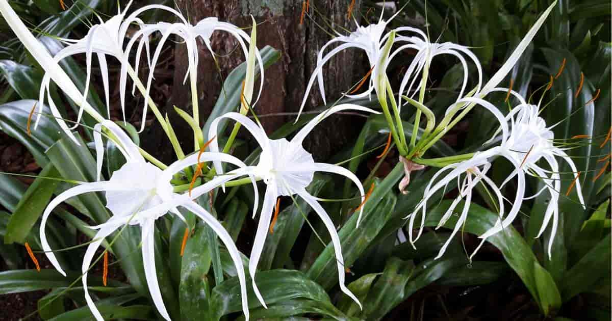

Overview
Latin Name: Crinum asiaticum Linn., Crinum latifolium
Family: Amaryllidaceae
Description: Nagadamani (Crinum asiaticum) is an Ayurvedic herb used for treating snake bite, fever, joint pain, skin diseases, and leucorrhea.
Regional Names
- Hindi: Shukadarshana, Chindar, Pindar, Badakanvar
- English: Poison bulb, Spider Lily, Cape Lily Flowers, Crinum lily
- Arabic: Haliyaon
- Bengali: Sookhdursun, Bara Kanur
- Gujarati: Nagdowan / Nagadamani
- Konkani: Kartmari
- Malayalam: Visamoolam
- Marathi: Nagadavana
- Tamil: Vishamungil
- Telugu: Kesar chettu, Lakshminarayana chettu
- Persian: Marchobia
- Sinhalese: Tobalo
- Chinese: Ouen chou lan
- Burmese: Koyangi
- Ceylon: Vishamungil
- Lakhimpur: Kaneripat
- Cochin China: Mansylan
External Morphology
Small perennial shrub growing to a height of 2-3 m. The leaves are 90-100 cm long and 9-10 cm wide, sprouting from the base. The flowers are white and appear from April to August. The fruits are small and round.
Properties
- Rasa (Taste): Madhura (Sweet), Tikta (Bitter)
- Guna (Qualities): Ruksha (Dry), Teekshna (Strong)
- Vipaka: Madhura (Sweet after digestion)
- Veerya (Potency): Ushna (Hot)
- Karma (Actions): Pitta Kapha shamaka (Reduces vitiated Pitta and Kapha)
Part Used
Dosage
- Rhizome Powder: 1 to 3 g
- Decoction: 5 to 10 ml
Chemical Composition
The rhizome contains latifine, crinamine, powellins, crinine, glucans A & B, crinifoline, and crinafolidine. The bulb contains alkaloid hippeastrine. The leaves contain alkaloids latifine and cherylline.
Uses
- Juice extracted from slightly heated leaves is used as ear drops for earache and inflammation of the external ear.
- Grated coconut mixed with fried rhizome powder and mustard oil is applied over joints with pain and inflammation.
- Paste of leaves fried in castor oil is applied over nails with infection and inflammation.
- Rhizome powder or decoction is used orally or as nasal drops to induce emesis in cases of poisoning.
- Seed of Chakramarda (Cassia tora) mixed with rhizome paste is applied to areas affected by skin diseases.
Therapeutic Uses
- Sarpavisha: Juice used as nasal drops for snake bite.
- Pradara (Leucorrhea): Fine paste of root with milk.
- Kushta (Skin Disease): Paste of Chakramarda seed and jeeraka.
Indications
- Vrana (Ulcers, wounds)
- Rakshograha (Psychiatric disorders)
- Visha (Toxic conditions, poisoning)
- Sarpa (Snake bite)
- Luta (Insect bite)
- Mutrakrichra (Dysuria, urinary retention)
- Jalagardabha (Skin disease)
- Graharoga (Psychiatric disorders)
- Udara (Ascites, abdominal enlargement)
- Adhmana (Abdominal bloating)
Pharmacology
Emetic, diaphoretic, purgative, laxative, carminative, antipyretic, anthelmintic, useful in biliousness, strangury, snake bite, vomiting, urinary discharges, tumors, and diseases of the vagina, abdomen, and blood.
Adverse Effects
The sap may cause skin irritation. Rhizomes can cause gastric irritation, colic pain, and nausea.